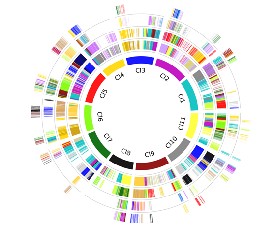

Circos¶
Circos is a simple way to run circos.
Parameters
Parameters |
Standards and instructions |
alignment |
Type:file | Default: - Output result of parameter a |
radius |
Type: float | Default: 0.2 Radius, value between 0-1. |
angle_gap |
Type: float | Default: 0.05 Gap between chromosomes. |
ring_width |
Type: float | Default: 0.015 The width of the ring. |
colors |
Type:{chr1:color1,chr2:color2,} Default: 1:red,2:orange,3:blue,4:cyan,5:green Set multiple sets of colors based on grouping, split with a comma. |
position |
Type: {order, start , end } | Default: order The position of a gene corresponds to the gff file. |
chr_label |
Type: str | Default: - A shorthand for chromosomes. |
column_names |
Type: str | Default: - Column markers of the alignment file. |
ancestor_location |
Type: file | Default: none The ancestral chromosome region of the species. |
alignment |
Type:file | Default: - Alignment of hierarchical and event-related gene collinearity. |
figsize |
Type: int,int | Default: 10,10 Control the proportion of the size of the saved picture. |
savefig |
Type: {*. png,*. pdf, *. svg} | Default: *. png Save pictures support png, pdf, svg formats. |
Use command to enter the folder wgdi -ci ? >> total.conf Take out the parameter file.
[circos]
gff = gff file
lens = lens file
radius = 0.2
angle_gap = 0.05
ring_width = 0.015
colors = 1:c,2:m,3:blue,4:gold,5:red,6:lawngreen,7:darkgreen,8:k,9:darkred,10:gray
alignment = alignment file
chr_label = chr
ancestor_location = ancestor file
ancestor = alignment file
figsize = 10,10
label_size = 9
columns_name = 1,2,3,4,5
savefig = result(.png, .pdf, .svg)
Quick start
After the parameters are modified properly, then run wgdi -ci total.conf
Example
